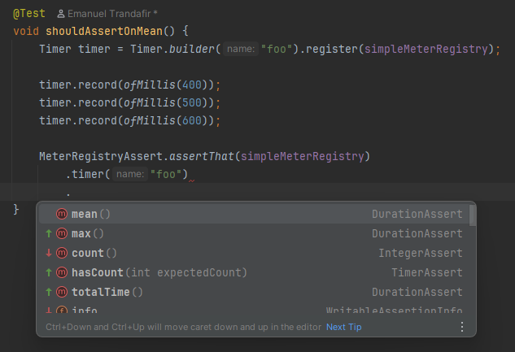

My First Contribution to Micrometer
Published: January 13, 2026
I'm excited to share that my first contribution to the Micrometer project has been merged and is now available in the 1.17.0-M1 pre-release!
The contribution adds AssertJ-style assertions for various meter types, making metric testing fun.
Testing Without micrometer-test
Recently, I wrote a Baeldung article on Testing with Micrometer, where we went over a few of the basics.
Without Micrometer's test support module, we can rely on the MeterRegistry to fetch various meters and assert their values manually.
For example, this is how we could verify that a counter has been incremented correctly:
class MicrometerUnitTest {
MeterRegistry meterRegistry = new SimpleMeterRegistry();
FooService fooService = new FooService(meterRegistry);
@Test
void whenFooIsCalled_thenCounterIsIncremented() {
fooService.foo();
fooService.foo();
fooService.foo();
double invocations = meterRegistry.get("foo.count")
.counter()
.count();
assertThat(invocations)
.isEqualTo(3);
}
}
My Contribution - Meter Assertions
The good news is that Micrometer provides a dedicated test support module:
<dependency>
<groupId>io.micrometer</groupId>
<artifactId>micrometer-test</artifactId>
<version>1.17.0-M1</version>
<scope>test</scope>
</dependency>
The micrometer-test was available for some time, but it was only covering a few basic assertions,
such as checking the existence of a meter.
With my contribution, we can now use the same fluent-api we know and love, for asserting meter values:
@Test
void whenFooIsCalled_thenCounterIsIncremented() {
fooService.foo();
fooService.foo();
fooService.foo();
MeterRegistryAssert.assertThat(meterRegistry)
.counter("foo.count")
.hasCount(3);
}
Counters, Timers, Gauges will have different assertions available. For instance, when it comes to verifying Timers, we'll be able to check things like the mean() time, max() time, and so on:

Navigating Through the API
Looking at the Timer assertions example above, we'll notice there's no hasMeanTime() or hasMaxTime() method. This is intentional: hard-coded Duration values can lead to flaky tests:
MeterRegistryAssert.assertThat(meterRegistry)
.timer("foo")
.hasMeanTime(Duration.ofMillis(500)) // <-- this looks flaky!
Instead of providing something like this, the API allows us to use mean(), which enables a large variety of Duration-specific assertions, such as isBetween(), isLessThan(), isGreaterThan(), isCloseTo() ...etc.:

Other Meter Types
For specialized meters like DistributionSummary or FunctionCounter, we can use the generic meter() API:
@Test
void shouldAssertOnMeasures() {
DistributionSummary meter = DistributionSummary
.builder("foo")
.register(simpleMeterRegistry);
meter.record(10.0);
meter.record(20.0);
MeterRegistryAssert.assertThat(meterRegistry)
.meter("foo")
.hasMeasurement(Statistic.COUNT, 2.0)
.hasMeasurement(Statistic.TOTAL, 30.0)
.hasMeasurement(Statistic.MAX, 20.0);
}
Conclusion
I'm looking forward to seeing how the community uses these assertions and to contributing more to the Micrometer project in the future.
You can check out the full pull request at github.com/micrometer-metrics/micrometer/pull/6870.
Big kudos to @shakuzen and @marcingrzejszczak for reviewing and guiding me through the contribution process!